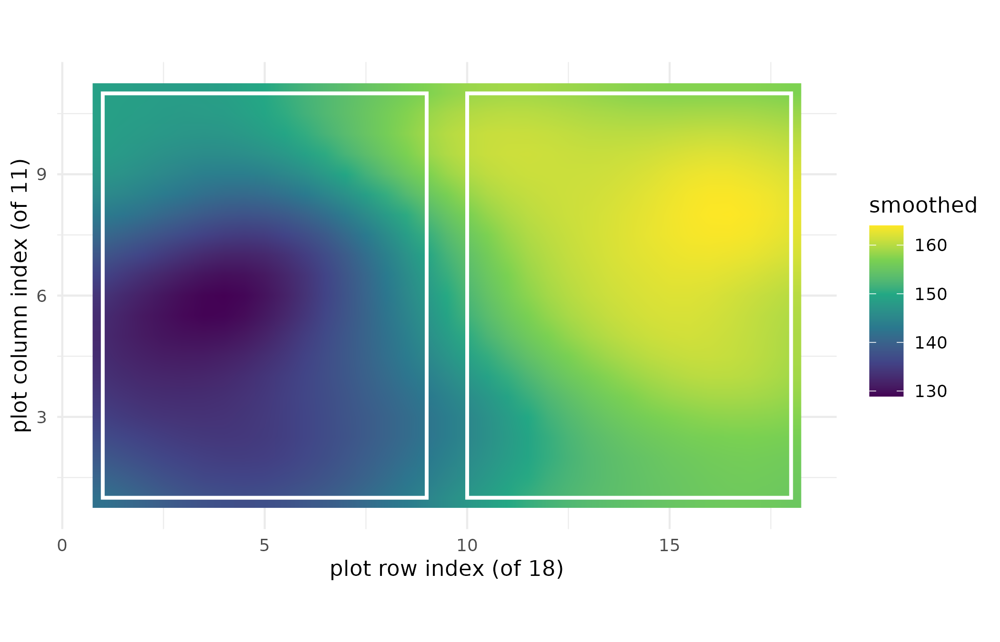

Why
A trialist who has just walked an 18-by-11 corn multi-environment
trial, plot by plot, does not actually want any one plot’s yield. The
management question sits one level up: if all I have are point
samples from these plots, what is the average yield – and how uncertain
is that average – over the whole paddock-scale block I am about to
manage as one unit, and can a grid this coarse even answer that, or
should it say so and stop? That is a change-of-support problem:
reconciling an observation made at one spatial support (the plot) with a
prediction wanted at another (the block), and propagating the plots’
spatial correlation into the block’s uncertainty rather than averaging
it away. This vignette answers it twice over – once where the data
support an answer, and once where gpfield refuses to give
one – on a real, public multi-environment trial, so every number below
is reproducible from data anyone can load.
What
Five verbs carry the whole of this vignette.
gpfield_spec() declares the model: which covariance kernel,
which coordinate columns, which response. gp_fit()
estimates its hyperparameters by marginal-likelihood optimisation and
returns a gpfield_fit whose estimated correlation range is
made explicit, because that range is what every guard below reasons
about. block_support() describes one or more paddock-scale
blocks as axis-aligned rectangles, and
gp_predict(..., support = "block") is the change-of-support
verb itself: the posterior mean and the full within-block predictive
covariance, integrated by quadrature and reduced to a block average and
its standard deviation. gp_field_smooth() is the one-call
path from a row-column trial layout to a smoothed surface, and
gp_field_plot() draws it.
as_orchestra_manifest() and verify_manifest()
express a prediction in, and check, the orchestra’s shared manifest
contract.
Do
Engines available on this build
Every chunk below that touches real data needs agridat;
the figure needs ggplot2. Both are checked once, and a
guarded chunk explains what is skipped when either is absent, so the
vignette still renders – with less to show – on a build that carries
neither.
has_agridat <- requireNamespace("agridat", quietly = TRUE)
has_ggplot2 <- requireNamespace("ggplot2", quietly = TRUE)A real row-column trial
We use the corn-hybrid Besag MET (multi-environment trial),
distributed in the agridat package and originating with
Besag and Higdon (1999): 64 corn hybrids across six counties in North
Carolina, each county laid out as an 18-by-11 lattice of plots. One
county (C1) is treated as the spatial field.
met <- agridat::besag.met
field <- met[met$county == "C1", c("row", "col", "yield")]
n_missing <- sum(is.na(field$yield))
str(field)
#> 'data.frame': 198 obs. of 3 variables:
#> $ row : int 1 1 1 1 1 1 1 1 1 1 ...
#> $ col : int 1 2 3 4 5 6 7 8 9 10 ...
#> $ yield: num 170 130 129 131 132 ...| Fact | Value |
|---|---|
| plots (rows of the field table) | 198 |
| row indices | 1 to 18 |
| column indices | 1 to 11 |
| plots with missing yield | 6 |
| correlation, row with yield | 0.50 |
| correlation, column with yield | 0.20 |
gpfield drops the incomplete rows before fitting; the
count above is what it drops, not a hand count.
Fitting the Gaussian process
A model is declared with gpfield_spec() and fitted with
gp_fit(). The default is a Matern covariance at smoothness
1.5, the usual choice for field data: once-differentiable rather than
the squared-exponential’s infinite smoothness, which avoids
over-smoothing real agronomic gradients.
spec <- gpfield_spec(coords = c("row", "col"), response = "yield")
fit <- gp_fit(spec, field, seed = 1L)
fit
#> <gpfield_fit>
#> kernel: matern
#> n training: 192
#> length-scale (standardised): 1.213
#> range (raw units): 13.67
#> marginal var / noise var: 0.3204 / 0.6092
#> log marginal likelihood: -238.6The fit reports an estimated correlation range in raw plot units – the quantity the rest of the package reasons about. A prediction spaced more coarsely than this range asks the Gaussian process to interpolate between effectively independent observations, and every abstention guard below is stated in units of it.
Two paddock blocks over the trial
block_support() describes each management block as
axis-aligned lower and upper bounds on the same row/column coordinates
the fit was built from. We split the field lengthways into a south and a
north half.
The smoothed surface, with the block footprints marked
gp_field_smooth() fits and predicts back onto the plot
grid in one call; here we refine the prediction grid to twice the plot
resolution. gp_field_plot() draws the smoothed surface, and
the two block outlines from above are drawn over it – a figure a table
of block means cannot give, because it shows where each block’s average
sits in the field, not just what the average is.
smoothed <- gp_field_smooth(field, response = "yield", refine = 2L, seed = 1L)
smoothed@prediction
#> <gpfield_prediction>
#> support: point
#> locations: 735
#> mean range: [128.9, 164]
#> sd range: [14.25, 15.05]
block_df <- data.frame(
block = blocks$ids,
xmin = blocks$lower[, 1L], xmax = blocks$upper[, 1L],
ymin = blocks$lower[, 2L], ymax = blocks$upper[, 2L]
)
gp_field_plot(smoothed) +
ggplot2::geom_rect(
data = block_df,
ggplot2::aes(xmin = xmin, xmax = xmax, ymin = ymin, ymax = ymax),
inherit.aes = FALSE, colour = "white", fill = NA, linewidth = 0.9
) +
ggplot2::labs(x = "plot row index (of 18)",
y = "plot column index (of 11)", fill = "smoothed yield")
Posterior mean corn yield over county C1 of the Besag MET, smoothed onto a grid twice as fine as the plot layout (refine = 2), with the south and north paddock blocks used below outlined in white. Warmer cells are higher predicted yield; agridat does not document a physical unit for this trial’s yield column, so the colour scale carries Besag and Higdon’s original, unlabelled scale.
The surface rises toward the high-row end of the lattice – both axes carry a positive trend in the raw plots, and the county-C1 facts table above gives the correlation of each – rather than showing the noisy plot-to-plot scatter of the raw data; that smoothing is the Matern range doing its job of separating spatial signal from plot-level noise.
Block-average predictions: mean and standard deviation
The change-of-support problem itself was set out in general by
Cressie (1993) and surveyed by Gotway and Young (2002): a point process
(the plots) aggregated to an areal one (the blocks).
gpfield approximates each block average by tensor-midpoint
quadrature over
nodes inside the block footprint, with equal weights
.
Writing
for the covariance between the
quadrature nodes and the
training points,
for the training covariance, and
for the quadrature nodes’ own covariance, the block mean and variance
are
Both are the same posterior mean and covariance a point prediction would use, evaluated at the quadrature nodes and then averaged with the quadrature weights, so the block variance carries the full within-block posterior covariance rather than the marginal point-wise variances alone.
block_pred <- gp_predict(fit, support = "block", blocks = blocks, seed = 1L)
block_tab <- data.frame(
block = block_pred@locations$block,
mean = round(block_pred@mean, 1L),
sd = round(block_pred@sd, 2L),
n_support = block_pred@n_support
)| Block | Mean yield | SD | Supporting plots |
|---|---|---|---|
| south | 140.0 | 1.39 | 192 |
| north | 158.4 | 1.43 | 192 |
Why this is not a cell-wise average
A naive mean of the same point predictions would treat them as independent and shrink the block-average standard deviation by . Because neighbouring plots within a block are positively correlated, the change-of-support variance is materially larger.
centre <- gp_predict(fit, data.frame(row = 5, col = 6))
# The tensor-midpoint rule realises per_axis^2 nodes, per_axis =
# round(sqrt(n_quad)), not the requested n_quad exactly -- divide by the
# realised count, not the request.
per_axis <- max(2L, round(sqrt(blocks$n_quad)))
n_realised <- per_axis^2L
naive_sd <- centre@sd / sqrt(n_realised)
sd_compare <- data.frame(
quantity = c("change-of-support SD (south block)",
"naive independence SD (centre point / sqrt(n))"),
sd = round(c(block_pred@sd[[1L]], naive_sd), 3L)
)| Quantity | SD |
|---|---|
| change-of-support SD (south block) | 1.388 |
| naive independence SD (centre point / sqrt(n)) | 1.018 |
Abstention: when the data will not bear the answer
gpfield refuses a prediction the data cannot support,
returning a typed gpfield_abstention with a
machine-readable reason rather than a confident surface built on data
too sparse or too coarse to carry it. Two refusals below, each triggered
for real by the fit above, are read against their own numbers in the
Read section.
# A query grid spaced far more coarsely than the estimated range.
coarse <- gp_predict(fit, data.frame(row = c(1, 50, 100),
col = c(1, 50, 100)))
is_gpfield_abstention(coarse)
#> [1] TRUE
coarse
#> <gpfield_abstention>
#> scope: gp_predict
#> reason: range_too_short
#> detail: query spacing 69.3 exceeds 1 x the estimated range 13.67; the field cannot be resolved this finely
#> spacing = 69.3
#> range = 13.67
#> spacing_tol = 1
# A block placed far outside the trial footprint.
far <- block_support(lower = rbind(c(100, 100)), upper = rbind(c(110, 110)))
far_pred <- gp_predict(fit, support = "block", blocks = far, seed = 1L)
is_gpfield_abstention(far_pred)
#> [1] TRUE
far_pred
#> <gpfield_abstention>
#> scope: gp_predict
#> reason: support_gap
#> detail: block block1 has no training observation within 13.67 (1 range) of its footprint
#> block = block1
#> range = 13.67
#> reach = 13.67Emitting the orchestra contract
gpfield is an orchestra member: a prediction is
expressible in the federation’s C2 v2 contract, the generic
orchestra_manifest every current and future orchestra
member emits or consumes. as_orchestra_manifest() adapts a
prediction into it; verify_manifest() confirms the payload
was not tampered with.
point_pred <- gp_predict(fit, field[, c("row", "col")])
manifest <- as_orchestra_manifest(point_pred)
manifest
#> <orchestra_manifest>
#> schema: 2.0.0-draft
#> emitter: gpfield 0.4.1.9000
#> target: predictions
#> method: gpfield:matern:point
#> run_id: gpfield-d314bf7f1ea9
#> outputs: 198 rows x 5 cols
#> hash: sha256:d314bf7f1ea9e4b4bcffd851695063bb5d8e311867a5d4b54e709bca8d2abd06
verify_manifest(manifest)$ok
#> [1] TRUEScaling to large fields
The exact solver is cubic in the number of observations – comfortable
for the hundreds-to-low-thousands of plots a multi-environment trial
carries, but not for a much larger field.
solver = "lowrank" fits a Deterministic Training
Conditional (DTC) sparse Gaussian process (Quinonero-Candela and
Rasmussen 2005) on a set of
space-filling inducing points, at cost linear in the number of plots
and quadratic in the inducing count. Writing
for the covariance between training points and inducing points and
for the inducing points’ own covariance, DTC replaces the exact
training covariance
by the
rank-
approximation
so every quantity that would otherwise need an
Cholesky factorisation instead needs only an
one. Every verb above – point and block prediction, change of support,
abstention, manifest emission – is unchanged; only the backend differs.
This section needs no real trial data, so it runs regardless of
agridat: a synthetic field, labelled as such, of two smooth
sinusoidal gradients plus noise.
set.seed(1L)
big <- expand.grid(x = seq(0, 25, by = 0.5), y = seq(0, 25, by = 0.5))
big$yield <- sin(0.3 * big$x) + cos(0.25 * big$y) + rnorm(nrow(big), 0, 0.2)
nrow(big)
#> [1] 2601
fit_lr <- gp_fit(
gpfield_spec(c("x", "y"), "yield", solver = "lowrank", n_inducing = 120L),
big, seed = 1L
)
fit_lr
#> <gpfield_fit>
#> kernel: matern
#> n training: 2601
#> solver: low-rank (DTC, 120 inducing points)
#> length-scale (standardised): 4.496
#> range (raw units): 90.66
#> marginal var / noise var: 10.35 / 0.04111
#> log marginal likelihood: 326.7When the inducing set covers the whole field the low-rank posterior is exactly the exact GP, so the choice is a scale-versus-cost dial rather than a change of model; the default backend stays exact.
Read
County C1’s estimated correlation range is 13.67 plot units, so a query spaced further apart than that asks the fit to interpolate between plots it no longer treats as related. Splitting the field into a south block (rows 1 to 9) and a north block (rows 10 to 18) gives block-average yields of 140.0 in the south and 158.4 in the north, a difference of 18.4 in the direction the row-yield correlation in the county-C1 facts table already predicted. The south block’s change-of-support standard deviation is 1.36 times what a naive independence assumption would report over the same 196 quadrature nodes: positive within-block correlation is not averaged away, so the paddock-scale uncertainty the table above reports is larger than a cell-wise average would suggest.
Both refusals above are real. The three-point query grid is spaced
69.3 plot units apart, roughly 5.1 times the estimated 13.67-unit range,
so gpfield abstains with reason
range_too_short rather than interpolate between points it
cannot relate. The far block sits at least 13.67 units outside the trial
footprint at every corner, further than any training plot’s correlation
reach, so gpfield abstains with reason
support_gap rather than average zero informative
observations into a confident block mean. The point-support manifest
emitted from the same fit verifies: verify_manifest()$ok is
TRUE.
Limits
This vignette shows one axis-aligned rectangular block per call;
gpfield does not yet support irregular or polygonal paddock
footprints, so a management block that is not a rectangle needs
approximating by one that is. The low-rank solver demonstrated in the
last section is isotropic (a single length-scale in every direction); an
anisotropic low-rank fit is not available, only the exact solver
supports it. Neither block above was under-supported by a small margin:
the south and the north block both sit comfortably inside the estimated
correlation range of every training plot, and the far block sits far
outside it, so the support_gap abstention here demonstrates
the guard tripping cleanly rather than the boundary case where a block
sits just inside or just outside the limit. agridat documents this
trial’s yield column only as “yield”, with no physical unit
recorded anywhere in the package, so the figure’s colour scale and every
mean and standard deviation above carry Besag and Higdon’s original,
unlabelled scale: comparisons within this vignette are meaningful, a
comparison against a value from a different source is not, unless that
source is on the same scale. Finally, nothing here holds out a plot and
checks the fitted surface against it; the fit diagnostics and the block
predictions above describe what the Gaussian process believes, not how
well that belief matches a plot withheld from training.
What to read next
The Ensemble-Run Manifest: a Portable, Verifiable Record (PESTO) documents the shared contract this vignette’s manifest section emits into, including the reproducibility and integrity guarantees a consumer can rely on. From an inference result to a grain plan (grainPlan) shows a manifest like this one carried forward into a paddock-level nitrogen, variety or grade decision, the practical purpose a block-average prediction like the one above ultimately serves.
Reproduce
Every fit and prediction above is seeded seed = 1L.
Block-support prediction still accepts a seed argument for
backward compatibility, but the block quadrature is a deterministic
tensor grid and no longer depends on it. Package versions follow.
sessionInfo()
#> R version 4.6.1 (2026-06-24)
#> Platform: x86_64-pc-linux-gnu
#> Running under: Ubuntu 24.04.5 LTS
#>
#> Matrix products: default
#> BLAS: /usr/lib/x86_64-linux-gnu/openblas-pthread/libblas.so.3
#> LAPACK: /usr/lib/x86_64-linux-gnu/openblas-pthread/libopenblasp-r0.3.26.so; LAPACK version 3.12.0
#>
#> locale:
#> [1] LC_CTYPE=C.UTF-8 LC_NUMERIC=C LC_TIME=C.UTF-8
#> [4] LC_COLLATE=C.UTF-8 LC_MONETARY=C.UTF-8 LC_MESSAGES=C.UTF-8
#> [7] LC_PAPER=C.UTF-8 LC_NAME=C LC_ADDRESS=C
#> [10] LC_TELEPHONE=C LC_MEASUREMENT=C.UTF-8 LC_IDENTIFICATION=C
#>
#> time zone: UTC
#> tzcode source: system (glibc)
#>
#> attached base packages:
#> [1] stats graphics grDevices utils datasets methods base
#>
#> other attached packages:
#> [1] gpfield_0.4.1.9000
#>
#> loaded via a namespace (and not attached):
#> [1] vctrs_0.7.3 cli_3.6.6 knitr_1.52 rlang_1.3.0
#> [5] xfun_0.62 otel_0.2.0 textshaping_1.0.5 S7_0.2.2
#> [9] jsonlite_2.0.0 labeling_0.4.3 glue_1.8.1 htmltools_0.5.9
#> [13] ragg_1.5.2 sass_0.4.10 scales_1.4.0 rmarkdown_2.32
#> [17] grid_4.6.1 evaluate_1.0.5 jquerylib_0.1.4 fastmap_1.2.0
#> [21] yaml_2.3.12 lifecycle_1.0.5 compiler_4.6.1 RColorBrewer_1.1-3
#> [25] fs_2.1.0 farver_2.1.2 systemfonts_1.3.2 digest_0.6.39
#> [29] viridisLite_0.4.3 R6_2.6.1 bslib_0.12.0 withr_3.0.3
#> [33] gtable_0.3.6 tools_4.6.1 agridat_1.26 pkgdown_2.2.1
#> [37] ggplot2_4.0.3 cachem_1.1.0 desc_1.4.3References
Besag, J. and Higdon, D. (1999). Bayesian analysis of agricultural
field experiments. Journal of the Royal Statistical Society, Series
B, 61(4), 691–746. Trial distributed in the agridat
package.
Cressie, N. (1993). Statistics for Spatial Data, revised edition. Wiley.
Gotway, C. A. and Young, L. J. (2002). Combining incompatible spatial data. Journal of the American Statistical Association, 97(458), 632–648.
Quinonero-Candela, J. and Rasmussen, C. E. (2005). A unifying view of sparse approximate Gaussian process regression. Journal of Machine Learning Research, 6, 1939–1959.